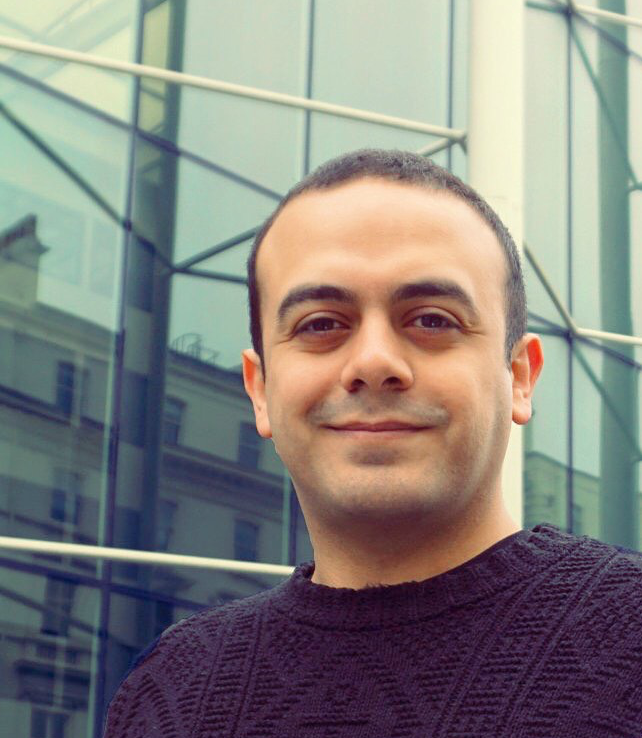
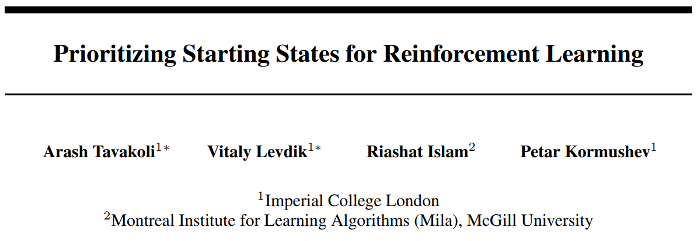
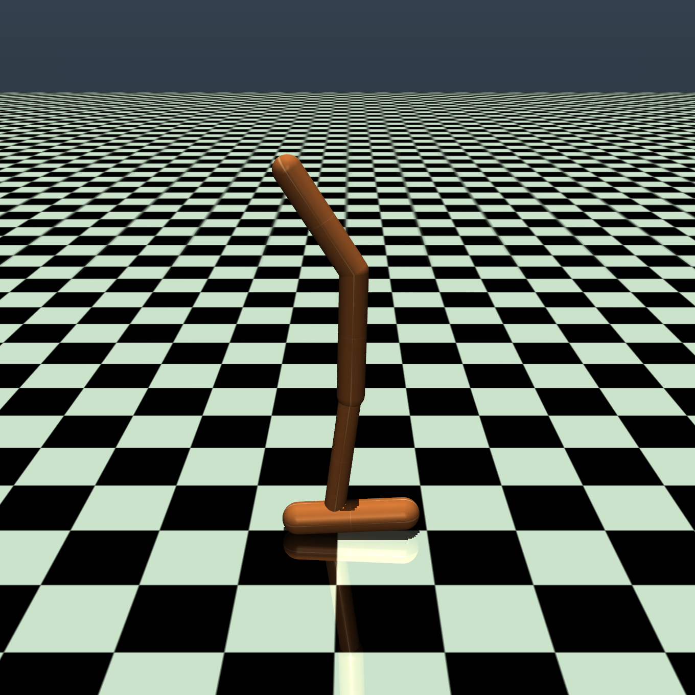
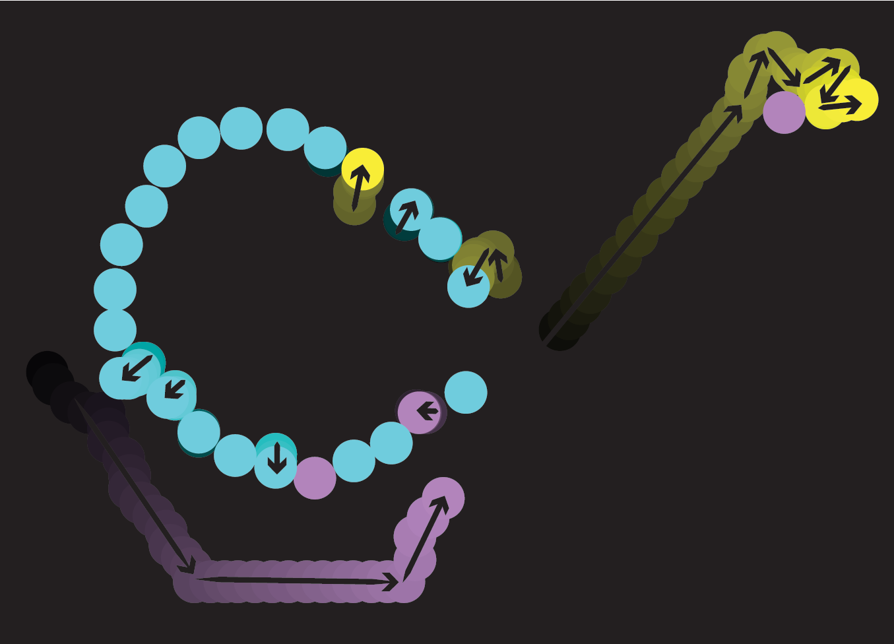
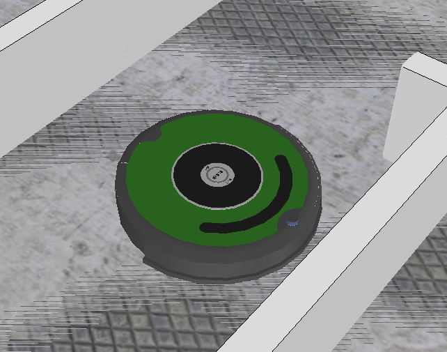

|

|
Arash Tavakoli
PhD Candidate in Computer Science
(Deep Reinforcement Learning)
Imperial College London
a.tavakoli [at] imperial.ac.uk

|
News
-
Dec 2018: Paper accepted at the Deep Reinforcement Learning Workshop, Conference on Neural Information Processing Systems (NeurIPS) 2018 in Montréal, Québec.
-
Sep 2018: Unity ML-Agents now has support for our action branching architectures, and comes equipped with an action branching variant of PPO (see official blog).
-
Aug 2018 – Nov 2018: Started as a Research Intern at Microsoft Research in Montréal, Québec.
-
Jul 2018: Attended the Deep Learning and Reinforcement Learning Summer Schools,
organized by CIFAR, Vector Institute, Amii, and Mila, in Toronto and presented a recent work.
|
See press coverage of both schools by Forbes.
|

|
-
Dec 2017: Presented two papers at the Deep Reinforcement Learning Symposium, Conference on Neural Information Processing Systems (NIPS) 2017 in Los Angeles, California.
-
Sep 2017: Attended the Deep Learning Indaba Summer School, co-organized by DeepMind, in Johannesburg, South Africa.
-
Aug 2017: Passed my first official PhD milestone with András György as my examiner.
Education
-
2016 – Present:
- Imperial College London, London, United Kingdom
- PhD Candidate in Computer Science
- Focus: Deep Reinforcement Learning
-
2014 – 2016:
-
2010 – 2014:
- University College London, London, United Kingdom
- MEng in Electrical Engineering (First-Class Honours)
- Remark: Dean's List Recognition
-
2012 – 2013:
Publications
|

|
Prioritizing Starting States for Reinforcement Learning
Arash Tavakoli*, Vitaly Levdik*, Riashat Islam, Petar Kormushev
In Workshop on Deep Reinforcement Learning, Conference on Neural Information Processing Systems (NeurIPS), 2018.
[arXiv]
|
|

|
Time Limits in Reinforcement Learning
Fabio Pardo, Arash Tavakoli, Vitaly Levdik, Petar Kormushev
In International Conference on Machine Learning (ICML), 2018.
[PMLR Library | arXiv | website | talk]
|
|
|
Action Branching Architectures for Deep Reinforcement Learning
Arash Tavakoli, Fabio Pardo, Petar Kormushev.
In AAAI Conference on Artificial Intelligence (AAAI), 2018.
Press: [Unity ML-Agents blog ("Additional new features")]
[AAAI Library | arXiv | code | Long Talk]
|
|

|
Crowdsourced Coordination through Online Games
Arash Tavakoli, Haig Nalbandian, Nora Ayanian.
In ACM/IEEE International Conference on Human-Robot Interaction (HRI), 2016.
Press: [MIT Technology Review (0:34s)]
[ACM Library | IEEE Xplore Library | preprint]
See also: [ICRA workshop version | game design report]
|
|

|
Seamless Robot Simulation Integration for Education: A Case Study
Wolfgang Hönig, Arash Tavakoli, Nora Ayanian.
In Workshop on Simulation in Robot Programming, IEEE International Conference on Simulation, Modeling, and Programming for Autonomous Robots (SIMPAR), 2016.
[PDF | website | code]
|
|